Puedes llegar a este santuario desde que llegas a la región de la torre de Lanayru, está situado en la parte alta del Pantano de Lanayru y lo encontrarás completamente rodeado de plantas espinosas. Para poder entrar debes quemar las plantas (disparando una flecha de fuego es suficiente).
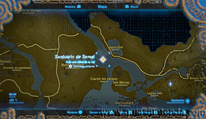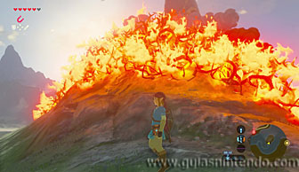
Una vez dentro puedes coger el primer cofre (con un ópalo en su interior) nada más comenzar si te dejas caer a la derecha (según entras) en una repisa. Pon la cámara en un punto elevado para ver el cofre fácilmente.
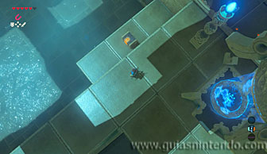
A continuación, empuja una especie de molino con cuatro asideros y harás que el láser situado sobre una columna haga un giro completo de 360 º. En ese movimiento activará un interruptor de cristal y el agua bajará (realmente si disparas una flecha al interruptor conseguirás el mismo efecto sin necesidad de empujar el molino).
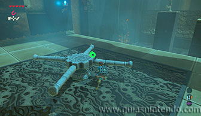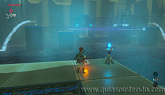
Cruza la sala andando y en el otro extremo verás la puerta de entrada al altar cerrada. Justo enfrente de ella, hay una zona con agua en donde se puede observar en el fondo un interruptor. Aquí también hay un barril que puedes elevar con el módulo imán. Cógelo y sitúalo sobre el interruptor aunque el barril flote. Es decir, debes dejarlo sobre él para que cuando el agua desaparezca, el cofre presione el interruptor.
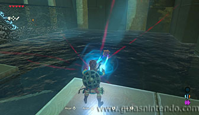
Después solo tienes que disparar una flecha al interruptor de cristal (desde la columna donde está el rayo láser) y al vaciarse la sala de agua se abrirá la puerta de salida.
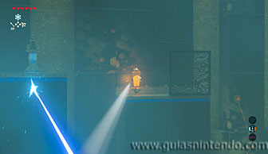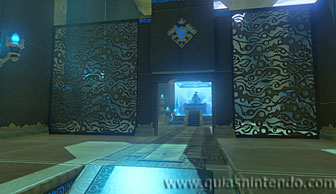
Sin embargo, puedes coger un segundo cofre antes de irte. Para ello colócate donde el láser y baja el agua. La puerta se abre, pero tú debes permanecer en el sitio para disparar una segunda flecha que vuelva a activar el interruptor de cristal. Rápidamente debes dirigirte hacia la salida y si consigues hacerlo lo suficientemente rápido, podrás pasar antes de que la puerta se vuelva a cerrar (ya que mientras sube el agua tienes unos segundos hasta que el barril deja de presionar el interruptor).
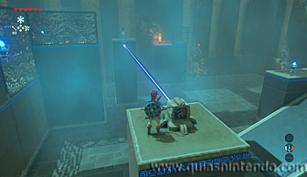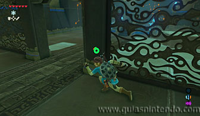
Una vez en la zona del altar (pero con la zona llena de agua) podrás crear un bloque de hielo para alcanzar el segundo cofre (que contiene un gran bumerán). Cuando llegues al altar del santuario podrás examinarlo para obtener un símbolo de valía.
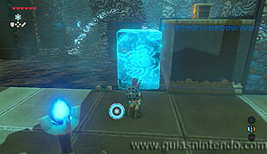